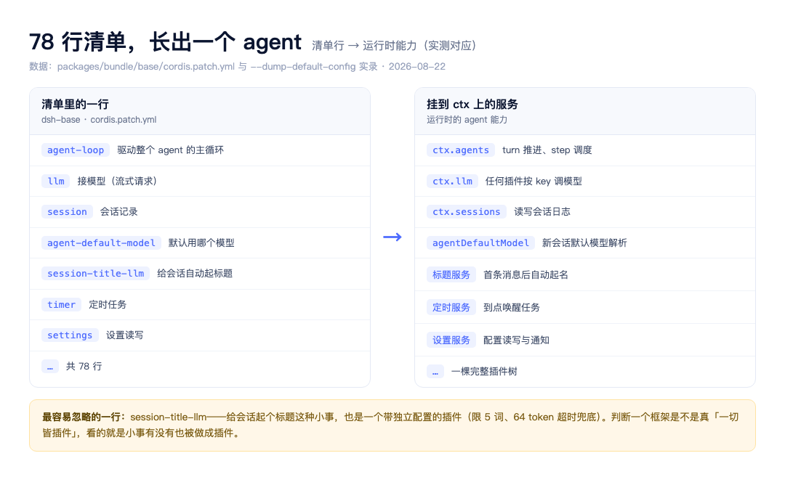

大家好我是郑同学。前奏篇里我们把 dsh 跑起来用了用，留了个钩子：这个框架最反直觉的地方——连驱动整个 agent 的主循环，都不是内核，是个插件。这篇开始兑现：把 dsh 拆到底，第一刀就切这个点。一句口诀先放在这，读完回来看它：树长万物，行替千钧。
● ● ●
拆一个 agent 项目，惯例第一件事是找主循环：模型调完工具、工具结果回给模型，那个 while 循环在哪。dsh 仓库近 40 个能力域、两百多个 package.json，你从入口文件一路追下去，追不到一个写死的主循环。它不在内核里，因为它根本不是内核：Agent Loop 是一个插件，和计时器插件、沙箱插件并排挂在一棵插件树上。
证据就在每个 profile 的第一层 dsh-base 里。base 的 cordis.patch.yml 是一份 78 行的插件清单，Agent Loop 在里面就是普通的一行（packages/bundle/base/cordis.patch.yml）：
# Agents created at startup. The base stays empty; raw overlays may
# create agents, while Web creates sessions on client request.
- id: agent-loop
name: '@deepseek-ai/dsh-agent-loop'
config:
agents: []
注释说得直白：base 里不预建任何 agent，启动时这行插件的配置是空列表。循环、模型适配器、工具注册表、会话日志，全是这棵树上的普通插件。架构文档（docs/architecture.zh.md）开篇的原话：产品的每一部分都是插件，因此每一部分都可以从配置替换。
● ● ●
单看一行清单不过瘾，把整个仓库摊开（顶层目录实测）：
图1：dsh 仓库地图
自上而下四层：apps/（cli 和 web 两个启动器）→ packages/bundle/（base、web-app、headless 三个组合包）→ packages/ 其余近 40 个能力域 → vendor/（Cordis 底座）。
能力域里装的是 llm（四个包）、session、subagent、sandbox、mcp、lsp、skill、compaction 这些。它们自己不带入口，全靠 bundle 的清单挂上树——这就是 78 行清单装得下一个 agent 的原因。
● ● ●
清单只是配置，树真的长出来什么样。dsh 自带一条命令，不启动进程、直接打印叠完所有配置层之后的插件树。本机实测（节选自 dsh web --dump-default-config，503 行实录）：
- id: timer
name: '@deepseek-ai/cordis-plugin-timer'
- id: llm
name: '@deepseek-ai/dsh-llm'
- id: session
name: '@deepseek-ai/dsh-session'
这三行值得停一下。timer 是定时器，llm 是模型接入，session 是会话——一个 agent 的三种核心能力，在合成树里是三个平起平坐的插件条目，谁也不比谁特殊。再往下翻，更有意思的出现了：
- id: session-title-llm
name: '@deepseek-ai/dsh-session-title-first-prompt-llm'
config:
targetWords: 5
maxInputBytes: 4096
maxOutputTokens: 64
timeoutMs: 60000
给会话自动起标题——就这么件小事，也是一个独立插件，还带自己的完整配置：标题限 5 个词、输出最多 64 token、60 秒超时兜底。
判断一个框架是不是真「一切皆插件」，看的不是它把循环做没做成插件，而是小事有没有也被做成插件。起标题在多数框架里是主流程顺手写死的一两行，在 dsh 里它有自己的包名、配置和卸载路径。
还有一行埋着后面要拆的线索：
- id: agent-default-model
name: '@deepseek-ai/dsh-agent-default-model'
config:
provider: deepseek-official
model: deepseek-v4-flash
「新会话默认用哪个模型」也是插件管的。你在设置页换默认模型，改的就是这一行的用户层覆盖——EP03 拆组装线时会回到这里。
● ● ●
把清单和运行时对上（均为实测对应关系）：

图2：78 行清单长出一个 agent
左边是清单里的行，右边是挂到共享上下文 ctx 上的服务。插件加载时把自己的能力挂上 ctx：循环插件提供 turn 推进，llm 插件提供 ctx.llm，会话插件提供 ctx.sessions。其他插件要用谁的能力，按 key 找，不 import 具体实现——这就是「依赖位置，不依赖身份」，EP02 拆 Cordis 时细讲。
这套机制直接回答了本篇开头的问题：为什么找不到 while 循环？因为循环不在某个内核文件里，它是 agent-loop 这行清单挂上去的服务。你想看它的代码，去读 packages/ 里那个包；你想换掉它，改一行配置。
● ● ●
口号容易说飘，落到 dsh 里有三个可检验的断言。
● ● ●
Agent Loop 敢做成插件，是因为它依赖的东西全部以服务形式存在于 ctx 里：模型请求走 ctx.llm 的流式接口，工具执行走 ctx.tools 的带把关流水线，上下文来自 ctx.sessions 的会话日志。循环自己只做编排——它是最重要的插件，但不是最特殊的插件。
这带来一个实际的推论：如果你不喜欢 dsh 的默认循环行为，可以写一个自己的 agent-loop 插件，patch 替换那一行，模型和工具原封不动。生态里已经有人这么玩了。
官方 README 对自己的定位也印证这一点：这个仓库是「一个想法、一个官方展示、一个灵感来源，而不是对我们的命令」。
● ● ●
做个对照帮定位，只对照架构不评价优劣。之前拆过的 Hermes 桌面版走垂直整合：多个前端背后一个自家 Python agent 内核，产品边界清晰。dsh 走另一条极端：没有内核，只有插件树。
代价也真实：组合层数多了，调试要靠工具看实际生效的配置树——就是前面那条 --dump-default-config，这个系列后面会反复用到它。
口诀收尾：树长万物，行替千钧。
下一篇拆发动机：Cordis 的五个核心概念，和一张四种事件分发模式的对照表。
素材：packages/bundle/base/cordis.patch.yml（78 行清单与 agent-loop/session-title-llm/agent-default-model 条目）、仓库顶层目录实测（apps/bundle/packages/vendor 分层）、dsh web --dump-default-config 本机实录 503 行（2026-08-22，timer/llm/session/session-title-llm/agent-default-model 节选）；架构原话引自 docs/architecture.zh.md；对照：Hermes 桌面篇 EP01-09 已发布内容。